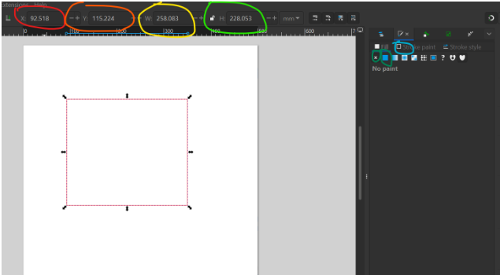
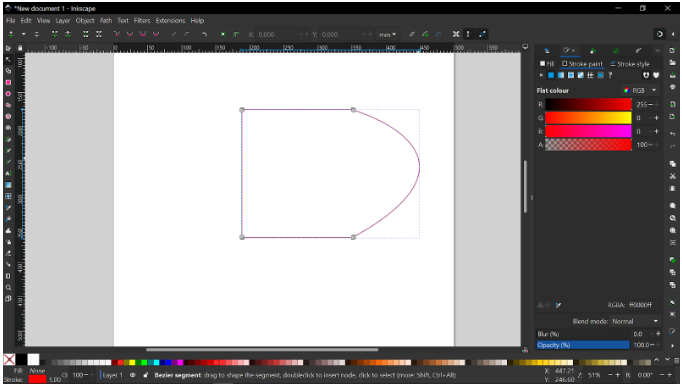
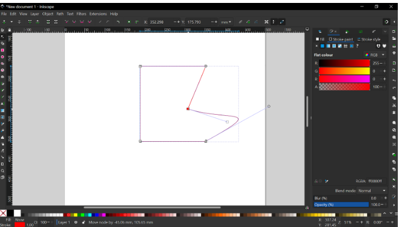
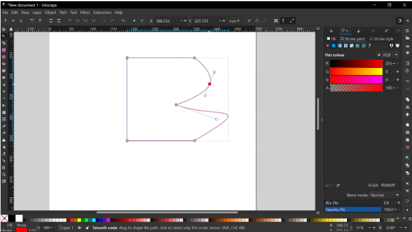
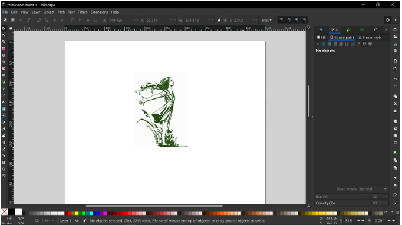
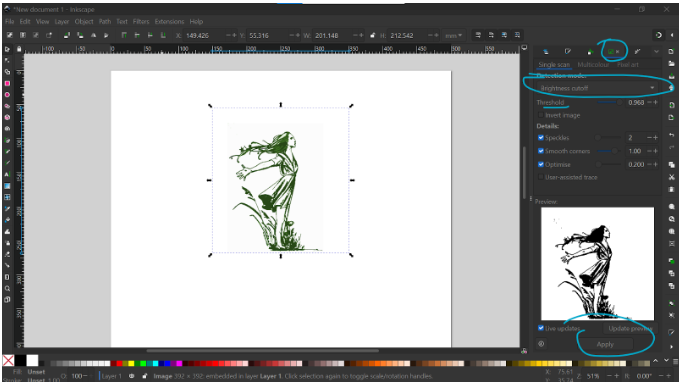
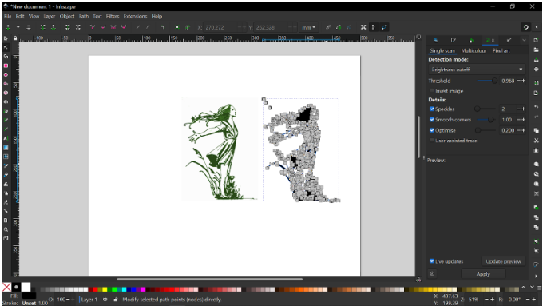

Voici un petit tuto sur comment utiliser la découpe laser. Cela permet de faire des décors 3D facilement en emboitant des cartons, de faire des découpes arrondis parfaites, faire des décors stylés à la chaîne, ... Par contre il est vraiment important de s'organiser en avance. En effet, Hubert Taxil est disponible sur un emploi du temps bien précis, qui changer d'une semaine à l'autre (ouverture, toolbox, ...). Il nous est souvent arrivé que Hubert ne soit pas disponible sur le premier créneau que nous lui proposions. Si prendre en avance permet d'être sûr d'avoir des créneaux disponibles.
La découpe permet de graver, marquer et découper des pièces dans des rectangles de 80*50 cm, pas plus, cartons qui doivent être plat, et propres. Le carton doit vraiment être plat (très légèrement bombé grand max), sinon il peut être refusé par Hubert.
Vous avez là des petits exemples de ce qui est possible avec la découpe laser:
Pour aller à la découpe laser vous avez besoin de:
L'agenda de disponibilité de Hubert est disponible sur Campus.
Pour découper vos cartons, au cutter c’est propre, à la scie c’est rapide. Avoir une petite réserve de 80*50 en permanence, c’est cool, et ça sert à faire des patrons quand vous avez besoin. Les décors réalisés peuvent être jolis, mais aussi utiles, et constituer des anims, cf les épées d’exc’art’libur.
Voilà par exemple le plan des épées : en rouge, la découpe, en bleu le marquage. Le premier plan correspond à la garde et la lame : c’est un carton, gravé pour faciliter le pliage. Prendre garde à bien prendre en compte l’épaisseur du carton (la rainure du deuxième pliage prendra deux épaisseurs de carton, donc plus épaisse de 1* la taille du carton…).
Ce genre de plan est dispo sur le drive BDA, hésitez pas à les réutiliser. Pour faire les plans, You Tube est votre ami, et sinon je fais un petit tuto ici.
Les plans de la découpe laser se font sur le logiciel inkscape (gratuit), enregistré au format svg.
Voici la tête d'inkscape de base, c est une feuille 21*29,7 cm. Pour commencer, on la met en 80*50 cm. Pour ça: File -> Document Properties -> Width = 500, Height = 800 (c'est les tailles en millimètres).
Voici la barre d outil tout en haut:
Voici l'outil carré, c'est un object (après il y aura des pahts).
sur la barre sur le côté droit, on est dans FILL là, et on plusieurs option de fill (là il y n’y en a pas)
la partie importante est juste à côté dans l’onglet stroke paint, vérifier que vous êtes dans RGB et sur le carré plein bleu et vous pouvez gérer la couleur
Object to path
click and drag pour changer la courbe comme vous voulez, double click pour créer un nouveau node sur le path sur lequel vous avez la souris.
Autre exemple. Vous pouvez aussi déplacer les languettes de chaque côté du node.
Hésitez pas à explorer un peu, vous avez différents type de nodes qui ne vous laissent pas faire les mêmes choses avec les languette.
Vous pouvez jouer avec les options et créer des trucs à partir de ça : on rajoute une image d’une magnifique asso d’intérêt général : on pourrait utiliser l’outil pen puis du click and drag pour décalquer, on va faire autrement.
Aller cliquer sur le premier bouton, celui entouré en bleu sur l image ci dessous
trace to bitmap > brightness cutoff (jouez avec ça aussi)> apply
vous allez voir que pour avoir un résultat de qualité il faut souvent tripoter un peu tous les paramètres, hésitez pas à tester.
transformez en path une image ! et ensuite stroke pour l’impression etc. Hésitez pas à nettoyer les images, plus il y a de nodes plus c’est long.